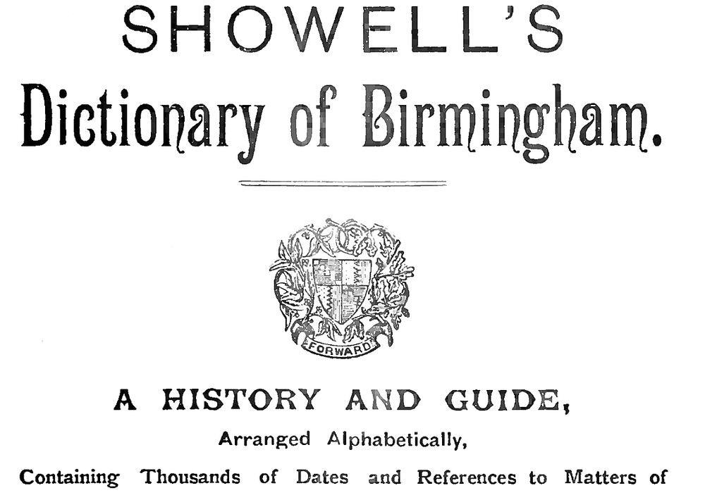

Браузер
Программа, в которой вы открываете сайты: Chrome, Safari, Firefox.
Что значат слова, которые встречаются на этом сайте. Если забыли какое-то из них, загляните сюда.

Программа, в которой вы открываете сайты: Chrome, Safari, Firefox.
Компьютер, который всегда включён и подключён к интернету. На нём работает программа сайта.
Браузер просит страницу у сервера, это запрос. Сервер присылает её обратно, это ответ. HTTP — правила, по которым они общаются.
Всё, что вы видите на странице: текст, кнопки, оформление. Работает в браузере.
Скрытая часть сайта: программа на сервере, которая принимает запрос, находит данные и готовит ответ. Здесь работает Python.
Правило, какой адрес какую страницу открывает. Например, адрес /contacts открывает страницу контактов.
Содержимое страницы: заголовки, абзацы, ссылки, картинки.
Оформление страницы: цвета, шрифты, расположение блоков.
Язык программирования, который работает в браузере. Оживляет страницу: кнопки, меню, проверку форм.
Язык программирования с простыми правилами. На нём пишут сайты, анализ данных и автоматизацию. Уроки с нуля.
Готовый набор инструментов для сборки сайта. С ним не нужно писать всё самому. Сравнение фреймворков.
Большой фреймворк. Сразу умеет вход по паролю, панель управления и работу с данными. Назван в честь гитариста Джанго Рейнхардта.
Маленький фреймворк. Даёт только основу, а остальное подключается по мере необходимости. Хорош для первого сайта.
Хранилище записей, в котором легко искать и менять данные: пользователей, товары, заказы. Раздел о базах данных.
Язык запросов к базе данных. Например: «покажи все задачи, которые ещё не выполнены».
Простая база данных, которая хранится в одном файле. Удобна для обучения и небольших проектов.
Способ работать с базой данных на Python, не составляя SQL-запросы вручную.
Четыре основных действия с записями: создать, прочитать, изменить и удалить. Они есть почти на любом сайте.
Способ, которым программы общаются между собой. Например, приложение погоды получает данные с сервера через API.
Программа, которая хранит историю изменений в коде. К любой версии можно вернуться. Раздел о Git.
Выкладывание сайта в интернет, чтобы его могли открыть другие люди. Как опубликовать сайт.